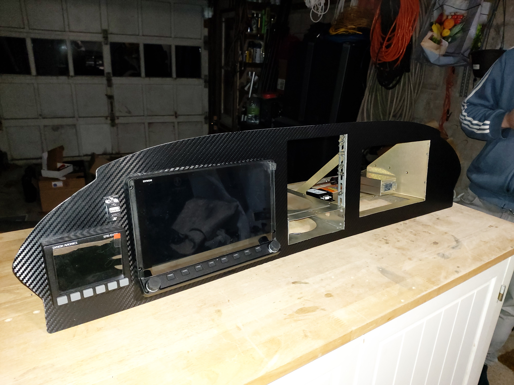
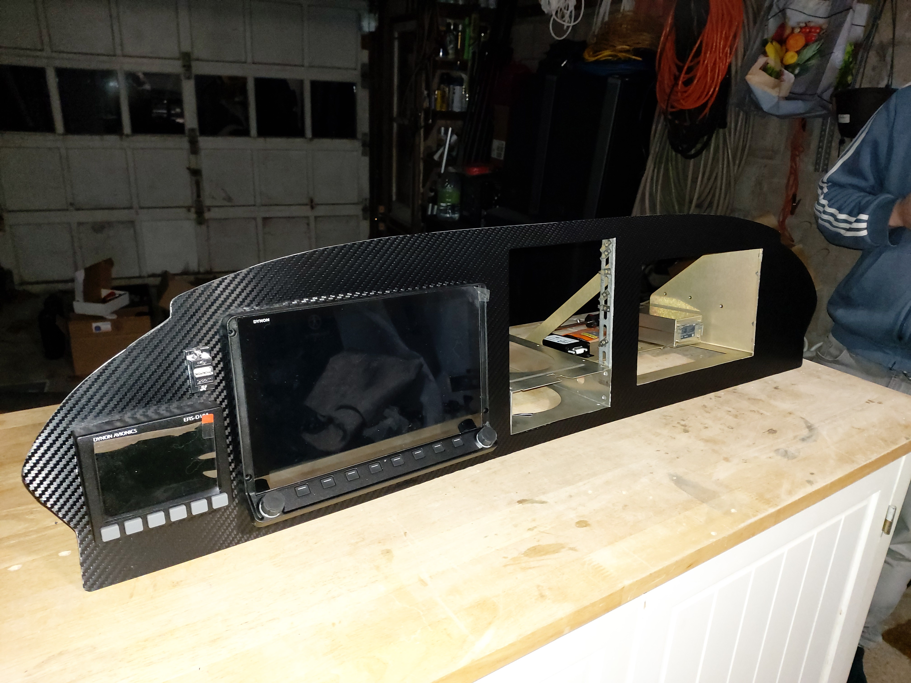

This is my friend's 1979 Piper Archer. A Piper Archer is a 4-seat aircraft with a 180 horsepower engine and cruise speeds of roughly 130 miles per hour. Every airplane has a "call-sign", which is typically a mix of 4-6 letters and numbers printed on the side of an airplane. This plane's call-sign is N2222B and because of the trailing "B", we have nicknamed this plane "The Bro". My friend and I both trained and received our Instrument-rating Pilot licenses on this aircraft. We have also flown it to several locations such as Provincetown, Nantucket, and Portsmouth, NH. If you hover over the plane picture, you will see the first plane we ever trained on, nicknamed "Lil' Romeo".
In 2020, we worked with an aviation mechanic to upgrade the avionics (instruments) and panel. Older planes often have outdated equipment, and we decided to install more modern avionics. With the help of our mechanic, we completed the upgrade in 3-4 months. We even custom cut and crafted a new aluminum panel depicted below. The new equipment includes two Dynon Skyviews, which are digital displays of all of your flight instruments, as well as a Garmin GPS and audio panel. Having modern equipment makes flying safer and helped us obtain our Instrument ratings with more ease.
 
